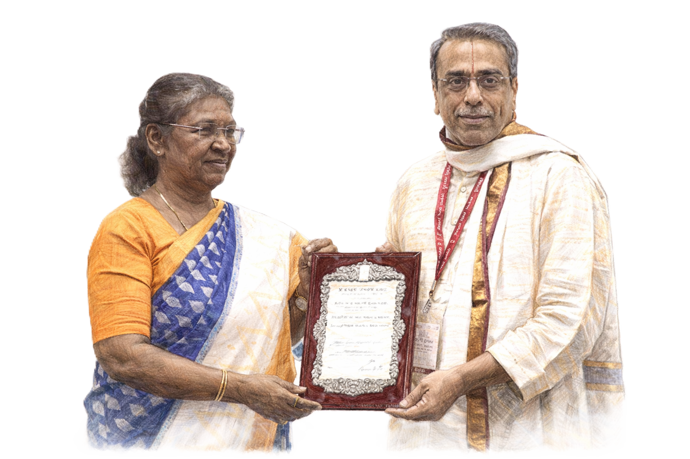

Awards & Honors
Celebrating excellence and dedication to preserving the Mysore tradition
2025
Nada Vallabha
Nada Sudha, Chennai
2024
Picchumani Iyer Centenary Award
Parthasarathi Swami Sabha, Chennai
2023
Central Sangeet Natak Akademi Award
Government of India
India's highest national recognition for performing artists, honoring sustained contribution to Carnatic music and the Mysore Veena tradition.
2022
Sangeeta Kala Ratna
Bangalore Gayana Samaja
2019
Veena Nadamani
Charubala Trust, Chennai
2018
Parampara Pradheepanacharya – Lifetime Achievement
Chintalapalli Parampara Trust
2016
Veena Sheshanna Memorial National Award
Swaramurthy V. N. Rao Trust
2014
Karnataka Kalashree
Karnataka Sangeetha Nrithya Academy
2013
Veena Brahma
Nada Brahma Sangeetha Sabha, Mysore
2009
Asthāna Vidvān
Sri Kamakoti Peetham, Kanchi
1997
Ganakalashri
Karnataka Gana Kala Parishat
1979 · 1991 · 1996 · 2006 · 2008
Best Veena Player (Five Times)
The Music Academy, Madras